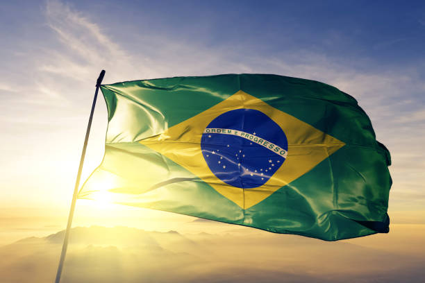
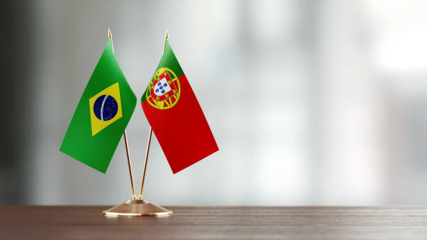

Brazil - Brasil

Brazil (Portuguese: Brasil;Brazilian Portuguese: [bɾaˈziw]), officially the Federative Republic of Brazil
(Portuguese: About this soundRepública Federativa do Brasil), is the largest country in both South America
and Latin America.
At 8.5 million square kilometers (3.2 million square miles) and with over 211 million people,
Brazil is the world's fifth-largest country by area and the sixth most populous.
Its capital is Brasília, and its most populous city is São Paulo. The federation is composed of the union of the 26 states and the Federal District.
It is the largest country to have Portuguese as an official language and the only one in the Americas; it is also one
of the most multicultural and ethnically diverse nations, due to over a century of mass immigration from around the world;
as well as the most populous Roman Catholic-majority country.
Click to learn more about Brazil-Brasil
Brazilian Portuguese

Brazilian Portuguese (português do Brasil, [poɾtʊˈɡez dʊ bɾaˈziw] or português brasileiro, [poɾtʊˈɡez bɾaziˈlejɾʊ]) is the set of dialects of the Portuguese language native to Brazil and the most influential form of Portuguese worldwide.
It is spoken by almost all of the 200 million inhabitants of Brazil and spoken widely across the Brazilian diaspora, today consisting of about two million Brazilians who have emigrated to other countries.
Brazilian Portuguese differs, particularly in phonology and prosody, from dialects spoken in Portugal and Portuguese-speaking African countries.Click for more about the language